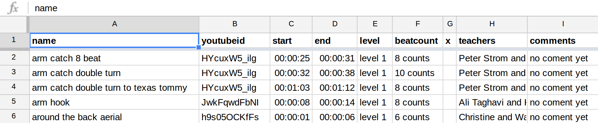

creating a new playlist
- you need first to create a spreadsheet on google doc with the following colums (put the right colmuns names in the first row or it will not work): 
- then you need to publish the sheet (File -> Publish to the web -> Publish) for the data to be accessible from our website.
- then you change sharing permissions of the Google Spreadsheet that should be either “Public” or set to “Anyone with link can view” for tour websit to be able to fetch cells from the Google Spreadsheet without authentication.
- then you get the id number of your spreadsheet from its url , for example if the url of your google sreadsheet it https://docs.google.com/spreadsheets/d/lj1KJ34dfl8kj9gf6jh9k7hjg7kjh7 (this id does not exist it is just an example !) then the id number is lj1KJ34dfl8kj9gf6jh9k7hjg7kjh7
- finaly you can then access to the player with your custom playlist by replacing YOUR_GOOGLEDOC_SPEADSHEET_ID by the id number in this url http://martingithub.github.io/lindy_hop_moves/?source=google_spreadsheet&id=YOUR_GOOGLEDOC_SPEADSHEET_ID